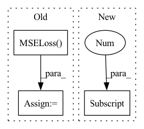

Pattern ID :30545

Before Change
train_dataset = torch.utils.data.TensorDataset(x_seq, target_seq)
train_loader = torch.utils.data.DataLoader(train_dataset, batch_size=batch_size, shuffle=shuffle)
criterion = torch.nn.MSELoss().to(device)
for batch_data in train_loader:
encoder_inputs, labels = batch_data
outputs = model(encoder_inputs, edge_index)
After Change
for batch_data in train_loader:
encoder_inputs, _ = batch_data
outputs1 = model(encoder_inputs, edge_index_seq)
outputs2 = model(encoder_inputs, edge_index_seq[0])
assert outputs1.shape == (batch_size, node_count, num_for_predict)
assert outputs2.shape == (batch_size, node_count, num_for_predict)
In pattern: SUPERPATTERN
Frequency: 3
Non-data size: 3
Instances
Fragment ID: 90357867
Project Name: benedekrozemberczki/pytorch_geometric_temporal
Commit Name: 8efa512ff3ac06546a082de036a85428720abd7a
Time: 2021-03-20
Author: He_YX@outlook.com
File Name: test/convolutional_test.py
M Class Name: AnonimousClass
N Class Name: AnonimousClass
M Method Name: test_astgcn(0)
N Method Name: test_astgcn(0)
M Parent Class:
N Parent Class:
M File Name: test/convolutional_test.py
N File Name: test/convolutional_test.py
M Start Line: 248
M End Line: 285
N Start Line: 236
N End Line: 266
'>
Before Change
desc: str = "Prediction",
) -> plt.Axes:
predictions, target = to_tensor(self._given_timeseries[:, feature_index]), to_tensor(target)
mse_loss = torch.nn.MSELoss()(predictions, target.to(predictions.device))
pVar = 1 - mse_loss / torch.var(target.to(mse_loss.device))
ax.plot(predictions.detach().cpu().numpy(), label=f"{desc} (pVar: {pVar.detach().cpu().item():.3f})")
After Change
predictions, target = to_tensor(self._mean_given_timeseries[:, feature_index]), to_tensor(target)
if self.is_mean:
ax.fill_between(
np.arange(predictions.shape[0]),
to_numpy(predictions) - to_numpy(self._std_given_timeseries[:, feature_index]),
to_numpy(predictions) + to_numpy(self._std_given_timeseries[:, feature_index]),
alpha=0.2, color="blue"
'>
Fragment ID: 90357868
Project Name: neurotorch/neurotorch
Commit Name: f5cbdb183f2bcf570692e9c0a1f0e9c91ae63a6b
Time: 2022-09-14
Author: 50332514+JeremieGince@users.noreply.github.com
File Name: src/neurotorch/visualisation/time_series_visualisation.py
M Class Name: Visualise
N Class Name: Visualise
M Method Name: plot_single_timeseries_comparison(8)
N Method Name: plot_single_timeseries_comparison(8)
M Parent Class:
N Parent Class:
M File Name: src/neurotorch/visualisation/time_series_visualisation.py
N File Name: src/neurotorch/visualisation/time_series_visualisation.py
M Start Line: 281
M End Line: 285
N Start Line: 305
N End Line: 315
'>
Before Change
train_dataset = torch.utils.data.TensorDataset(x_seq, target_seq)
train_loader = torch.utils.data.DataLoader(train_dataset, batch_size=batch_size, shuffle=shuffle)
criterion = torch.nn.MSELoss().to(device)
for batch_data in train_loader:
encoder_inputs, labels = batch_data
outputs = model(encoder_inputs, edge_index)
After Change
for batch_data in train_loader:
encoder_inputs, _ = batch_data
outputs1 = model(encoder_inputs, edge_index_seq)
outputs2 = model(encoder_inputs, edge_index_seq[0])
assert outputs1.shape == (batch_size, node_count, num_for_predict)
assert outputs2.shape == (batch_size, node_count, num_for_predict)
'>
Fragment ID: 90357869
Project Name: benedekrozemberczki/pytorch_geometric_temporal
Commit Name: 8efa512ff3ac06546a082de036a85428720abd7a
Time: 2021-03-20
Author: He_YX@outlook.com
File Name: test/convolutional_test.py
M Class Name: AnonimousClass
N Class Name: AnonimousClass
M Method Name: test_mstgcn(0)
N Method Name: test_mstgcn(0)
M Parent Class:
N Parent Class:
M File Name: test/convolutional_test.py
N File Name: test/convolutional_test.py
M Start Line: 291
M End Line: 328
N Start Line: 293
N End Line: 311